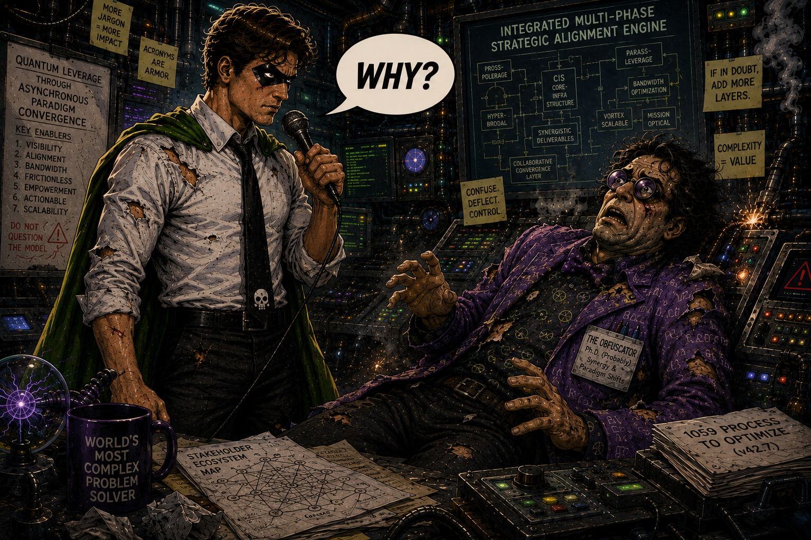
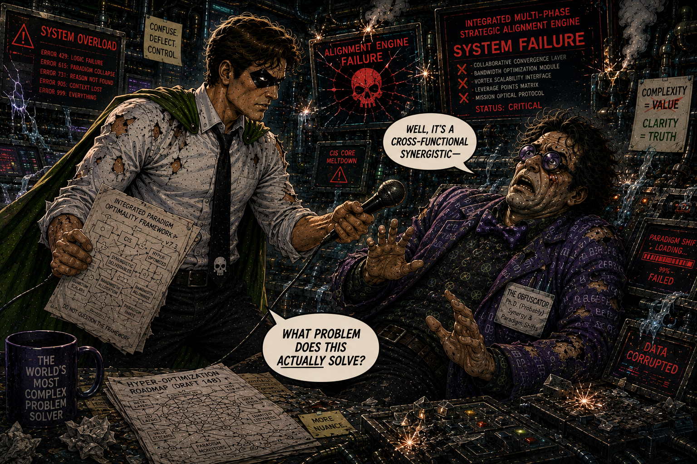
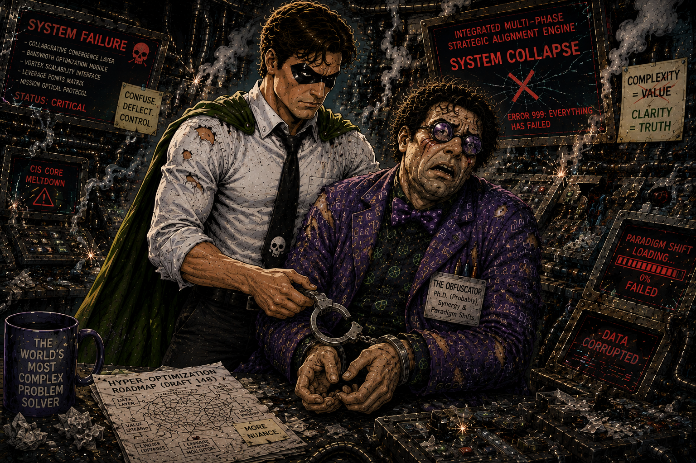

Confidential preview / Edition 2
The shortest question
Deep beneath the city, The Obfuscator has constructed the world's most complicated solution to a problem nobody can clearly identify.
Every screen reports alignment. Every diagram contains another diagram. Every explanation introduces three new acronyms.
The Amplifier does not raise his voice.
He raises one question.
Why?
A classified glimpse of the next issue. Subject to further questions.

Open full-size image in a new tab.The Obfuscator has an answer for everything. Unfortunately, nobody understands any of them.

Open full-size image in a new tab.One clear follow-up cuts through a thousand layers of jargon. The system cannot survive contact with its original purpose.

Open full-size image in a new tab.With the jargon stripped away, all that remains is a needlessly complicated machine—and a very simple arrest.
To be continued. Loudly.
Return to Issue 1